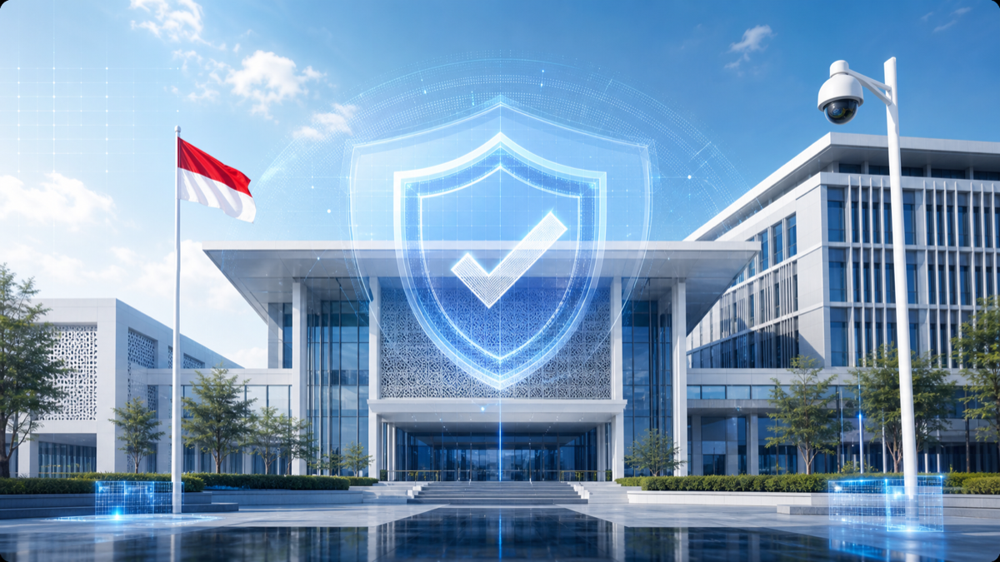

Kenyamanan Pasien
Pasien menghabiskan banyak waktu di dalam ruang rawat inap sehingga furnitur dan kondisi ruang perlu mendukung kenyamanan selama masa perawatan.
Memuat Ruang Rawat Inap
Ruang Rawat Inap
Ciptakan ruang rawat inap yang mendukung kenyamanan pasien, kemudahan perawatan, serta pemantauan kondisi ruang melalui furniture dan teknologi pendukung yang tepat.
Konsultasikan Kebutuhan Anda
Tantangan
Ruang rawat inap memiliki berbagai kebutuhan yang harus berjalan secara bersamaan. Kenyamanan pasien, aktivitas perawatan, akses terhadap fasilitas, hingga pemantauan kondisi ruang perlu diperhatikan agar lingkungan perawatan dapat digunakan secara optimal.
Pasien menghabiskan banyak waktu di dalam ruang rawat inap sehingga furnitur dan kondisi ruang perlu mendukung kenyamanan selama masa perawatan.
Aktivitas tenaga medis membutuhkan akses yang mudah terhadap pasien serta fasilitas yang mendukung proses perawatan sehari-hari.
Kondisi pasien dan aktivitas di dalam ruang perlu dapat dipantau dengan dukungan sistem monitoring yang sesuai dengan kebutuhan fasilitas kesehatan.
Pasien membutuhkan sarana untuk meminta bantuan ketika membutuhkan perhatian atau mengalami kondisi tertentu selama berada di ruang rawat inap.
Solusi Kami
Dukung kegiatan praktik dan pembelajaran komputer dengan perangkat teknologi, workstation siswa, area guru, serta fasilitas pendukung yang disesuaikan dengan kebutuhan laboratorium.

Sistem pemanggilan yang memudahkan pasien menghubungi petugas saat membutuhkan bantuan.
Lihat detailRanjang elektrik yang mendukung kenyamanan pasien dan kebutuhan aktivitas perawatan.
Lihat detail
Sofa nyaman yang mendukung kebutuhan pasien dan pendamping selama berada di ruang rawat inap.
Lihat detailTeknologi radar yang membantu mendeteksi kejadian jatuh sebagai bagian dari sistem monitoring pasien.
Lihat detailKamera pengawasan yang membantu memantau kondisi dan aktivitas di area ruang rawat inap.
Lihat detailSensor termal yang membantu mendeteksi keberadaan sebagai bagian dari sistem pemantauan ruang.
Lihat detailMendukung Kenyamanan dan Kebutuhan Perawatan
Ranjang elektrik custom menjadi bagian utama ruang rawat inap untuk mendukung kenyamanan pasien selama menjalani perawatan. Pengaturan dan desainnya dapat disesuaikan dengan kebutuhan ruang serta aktivitas perawatan.
Memudahkan Komunikasi Pasien dengan Petugas
Nurse Call System menyediakan sarana bagi pasien untuk menghubungi petugas ketika membutuhkan bantuan. Sistem ini membantu mempermudah komunikasi antara pasien dan tenaga medis selama berada di ruang rawat inap.
Memberikan Kenyamanan bagi Pasien dan Pendamping
Sofa VIP melengkapi ruang rawat inap dengan area duduk yang nyaman bagi keluarga atau pendamping pasien. Kehadirannya juga membantu menciptakan ruang perawatan yang lebih nyaman dan representatif.
Mendukung Pemantauan Kejadian Jatuh
Fall Detection Radar menggunakan teknologi radar untuk membantu mendeteksi kejadian jatuh pada area yang dipantau. Perangkat ini dapat menjadi bagian dari sistem monitoring untuk mendukung pemantauan pasien di ruang rawat inap.
Mendukung Pemantauan Area Ruang
CCTV Dome digunakan untuk membantu memantau kondisi dan aktivitas pada area yang telah ditentukan di ruang rawat inap. Desain dome memberikan tampilan yang lebih menyatu dengan lingkungan interior fasilitas kesehatan.
Mendukung Pemantauan Keberadaan
Thermal Presence Detector menggunakan teknologi sensor termal untuk membantu mendeteksi keberadaan pada area yang dipantau. Perangkat ini dapat digunakan sebagai bagian dari sistem monitoring ruang rawat inap.
FAQ
Ruang rawat inap adalah ruang di fasilitas kesehatan yang digunakan pasien untuk menjalani perawatan dan pemantauan selama periode tertentu.
Rawat inap merupakan pelayanan kesehatan yang memungkinkan pasien tinggal di fasilitas kesehatan untuk mendapatkan perawatan dan pemantauan sesuai kebutuhannya.
Ruang rawat inap dapat dilengkapi ranjang pasien, sofa pendamping, Nurse Call System, teknologi monitoring, serta berbagai fasilitas pendukung lainnya.
Furniture dapat meliputi ranjang pasien, sofa untuk pendamping, serta fasilitas penyimpanan yang disesuaikan dengan kebutuhan ruang.
Nurse Call System membantu pasien menghubungi petugas ketika membutuhkan bantuan selama berada di ruang rawat inap.
Teknologi monitoring seperti CCTV, Fall Detection Radar, dan Thermal Presence Detector dapat membantu memantau kondisi serta aktivitas pada area yang ditentukan.
Ya. Tata ruang, furniture, sistem komunikasi, teknologi monitoring, dan fasilitas pendukung dapat disesuaikan dengan kondisi serta kebutuhan fasilitas kesehatan.
Lengkapi ruang rawat inap dengan furniture, sistem komunikasi, teknologi monitoring, dan fasilitas pendukung yang disesuaikan dengan kebutuhan fasilitas kesehatan